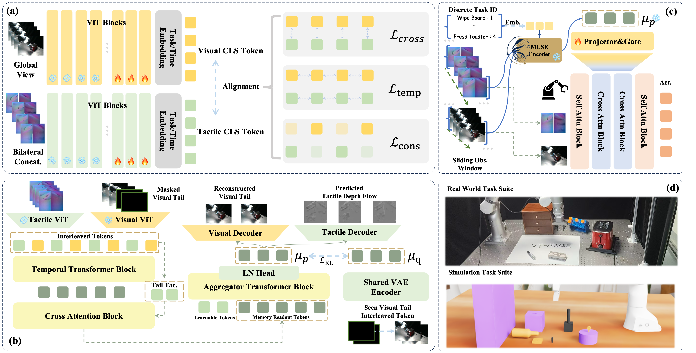

Multimodal Unified Sequential Visuotactile
Representation Learning for Manipulation
Abstract
We propose VT-MUSE, a temporal visuotactile representation framework that jointly models visual and tactile dynamics through a unified cVAE-based encoder-decoder. The encoder processes masked visual observations alongside full tactile history via a temporal-aware layer, while multiple auxiliary heads reconstruct current observations, tactile depth flow, and marker flow. A two-stage training scheme first aligns the two modalities temporally, then optimizes the full model under multi-task supervision. Experiments on both simulation and real-world benchmarks show that VT-MUSE achieves state-of-the-art performance on contact-rich manipulation tasks with low data and compute cost.
Method Overview

Experimental Results
Table I. Success rate (SR, %) on UniVTAC simulation benchmark. LB = Lift Bottle, PoK = Pull-out Key, IHo = Insert Hole, IHD = Insert HDMI. * from official benchmark.
| Method | LB | PoK | IHo | IHD | Avg. | w/o IHD |
|---|---|---|---|---|---|---|
| ACT (Pure Vision) | 42 | 28 | 19 | 15 | 26 | 30 |
| ACT+UniVTAC | 71 | 45 | 23 | 17 | 39 | 46.33 |
| ViTaL * | 72 | 47 | 25 | 6 | 37.5 | 48 |
| FTP-π₀.₅ * | 77 | 30 | 47 | — | — | 51.33 |
| VT-MUSE (Ours) | 84 | 38 | 68 | 31 | 55.25 | 62.33 |
Table II. Success rate on real-world tasks (Flexiv Rizon 4s + XenseGripper, 20 trials each). IT = Insert Tube, WB = Wipe Board, PD = Pull out Drawer, PT = Press Toast.
| Method | IT | WB | PD | PT | Avg. |
|---|---|---|---|---|---|
| ACT (Pure Vision) | 1/20 | 3/20 | 13/20 | 4/20 | 26.25% |
| ACT (Vision + Tactile) | 1/20 | 5/20 | 15/20 | 4/20 | 31.25% |
| VT-MUSE (Ours) | 19/20 | 19/20 | 20/20 | 18/20 | 95% |
Demo Videos
Simulation (UniVTAC)
Lift Bottle
Pull-out Key
Insert Hole
Insert HDMI
Real World (Flexiv Rizon 4s)
Insert Tube
Wipe Board
Pull out Drawer
Press Toast